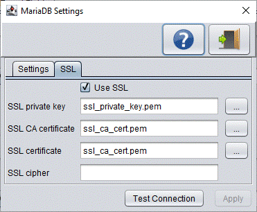

Export from a remote database

Buttons
| Button |
Description |
 |
Shows this help screen |
 |
Exits this screen |
| Test Connection |
Test the connection settings |
| Apply |
Apply the changes made on this screen |
SSL
If your user has been setup by the database administrator to use SSL then here you can
define which certificates DBConvert should use to connect to the database. You can setup
DBConvert to use a one way or two way connection. Which one to use depends on the database
and user configuration.
Use SSL
If you don't need to use SSL then leave this check box deactivated. If SSL is required you
you'd need to activate it.
SSL mode
Indicate SSL demand. Possible values include disable, allow, prefer, require, verify-ca and
verify-full for PostGreSQL and disable, trust, verify-ca and verify-full for MariaDB/MySQL.
- require, allow, prefer and trust all default to a non validating SSL factory and do not check the
validity of the certificate or the host name.
- verify-ca validates the certificate, but does not verify the hostname.
- verify-full will validate that the certificate is correct and verify the host connected to
has the same hostname as the certificate.
Default is "prefer" for PostgresSQL and "trust" for MariaDB/MySQL.
KeyStore file
File path of the keyStore file that contain client private key store and associate certificates
KeyStore password
Password for the client certificate keyStore
SSL server certificate
Permits providing server's certificate in DER form, or server's CA certificate (MariaDB/MySQL).
The server will be added to trustStore. This permits a self-signed certificate to be trusted.
SSL CA certificate
File name of the SSL root certificate. It can be a PEM encoded X509v3 certificate